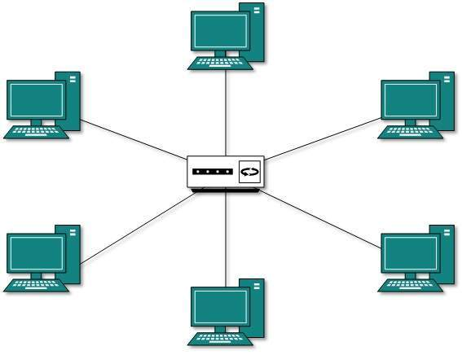

Star Topology
All hosts in Star topology are connected to a central device, known as hub device, using a point-to-point connection. That is, there exists a point to point connection between hosts and hub. The hub device can be any of the following: Layer-1 hub or repeater, Layer-2 switch or bridge, Layer-3 router or gateway

×

As in Bus topology, hub acts as single point of failure. If hub fails, connectivity of all hosts to all other hosts fails. Every communication between hosts, takes place through only the hub.Star topology is not expensive as to connect one more host, only one cable is required and configuration is simple.